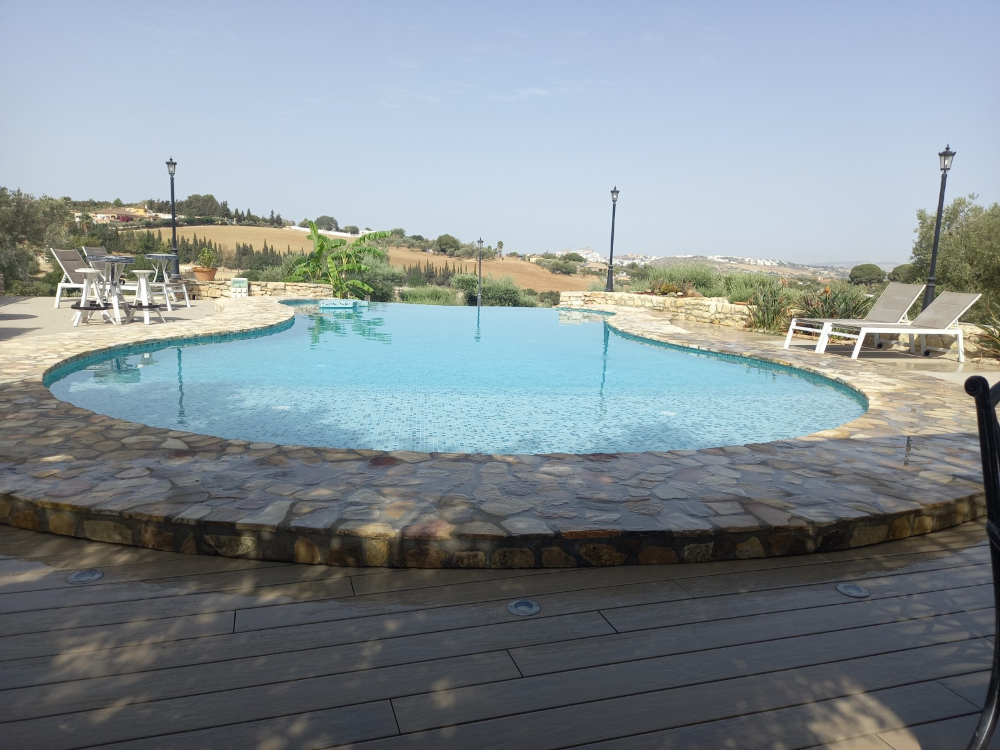
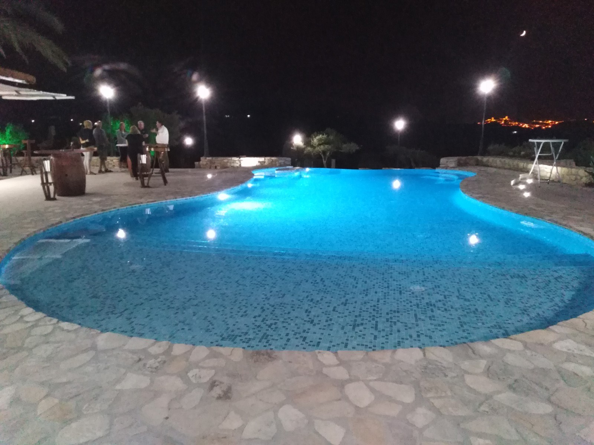
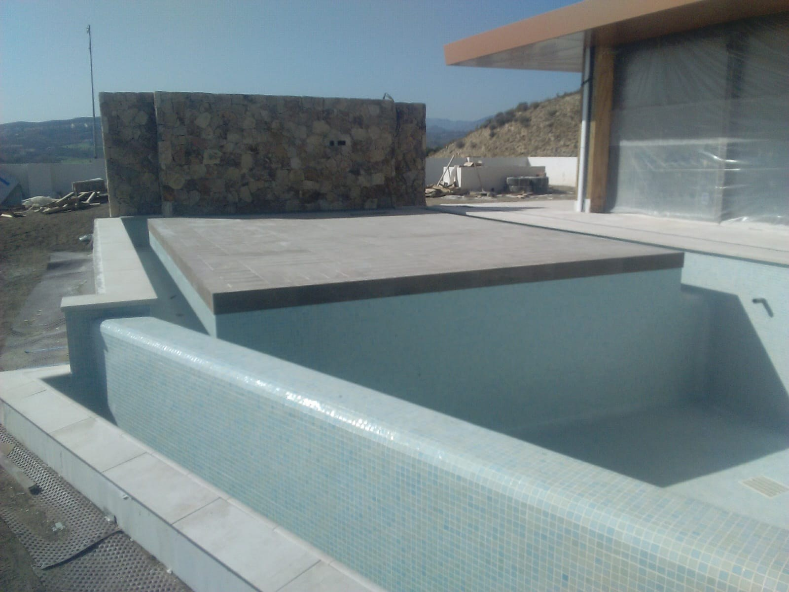
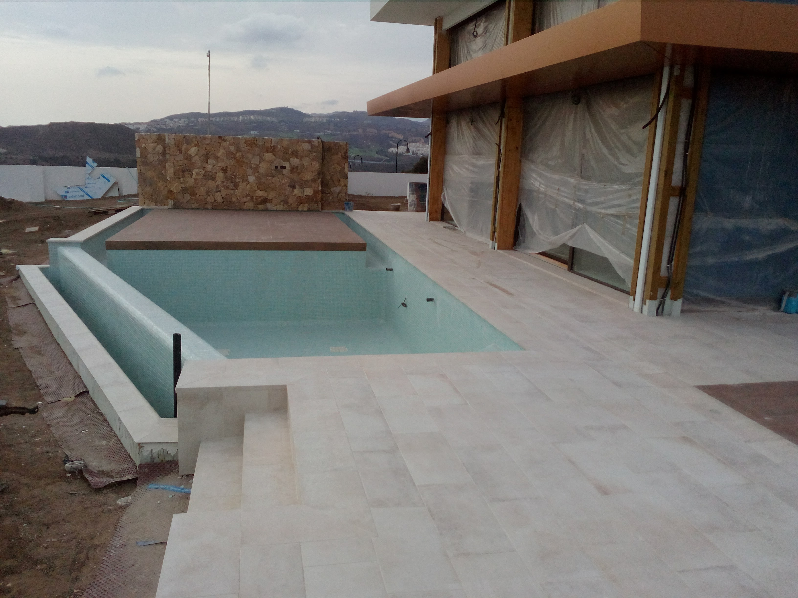

Vistas y orientación
Buscamos el punto de vista que permita disfrutar la continuidad del agua con el entorno.
PISCINAS INFINITY · ARCOS Y CÁDIZ
El agua parece continuar hacia el horizonte. La orientación, las vistas y las cotas del terreno dan sentido al diseño de una piscina infinity.
Consultar mi proyecto ↗
DISEÑO Y FUNCIONAMIENTO
El efecto infinity se consigue con un borde de desbordamiento orientado hacia una vista. Desde determinados puntos, el plano de agua parece enlazarse con el paisaje.
Es una solución desbordante: el agua que pasa por ese borde se recoge y se incorpora al circuito de depuración. La orientación del vaso y el diseño del borde se estudian junto con las instalaciones.
NUESTRAS OBRAS
Consulta las fotografías de cada obra y los detalles de su ejecución.


ANTES DE CONSTRUIR
Valoramos el espacio, los acabados y las instalaciones dentro de un mismo proyecto.
Buscamos el punto de vista que permita disfrutar la continuidad del agua con el entorno.
Estudiamos los desniveles, el soporte y las condiciones de la parcela antes de definir el vaso.
El borde, la zona de recogida y la compensación se proyectan conjuntamente.
La terraza, las escaleras y los revestimientos completan la relación entre la piscina y la vivienda.
DETALLES DE OBRA
Fotografías para apreciar el vaso, los bordes y su relación con el exterior.

RESOLVEMOS TUS DUDAS
La localidad, las medidas aproximadas, fotografías del terreno y de las vistas, y los accesos disponibles. La estructura, las cotas, el borde de desbordamiento y las instalaciones se valoran conjuntamente para definir el alcance.
Infinity utiliza el desbordamiento para crear un efecto visual hacia el paisaje. Una piscina desbordante puede recoger el agua por otros bordes sin buscar ese efecto.
La pendiente puede ayudar al efecto, pero hay que valorar las cotas y las vistas de cada parcela. La solución depende del proyecto.
Sí. El ejemplo de esta página muestra un vaso de formas curvas; el diseño del borde y la hidráulica deben adaptarse a la geometría.
El presupuesto depende de las dimensiones, el terreno, los accesos, los acabados y las instalaciones. Envíanos la localidad, fotos del espacio y las medidas aproximadas para estudiar el proyecto.
ENCUENTRA TU ESTILO
OCM POOL · CERCA DE TI
Cuéntanos dónde quieres construir o renovar tu piscina. Con unas fotografías y las medidas aproximadas podremos estudiar el siguiente paso.
Pedir presupuesto por WhatsApp